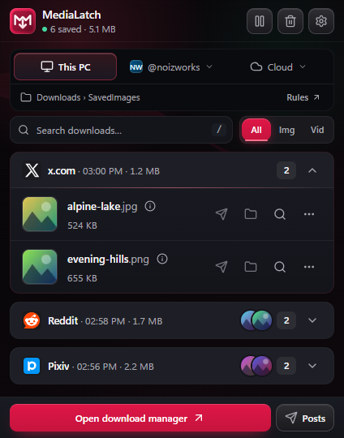

MediaLatch for Chromium
Save and organize web media
Pick an image, GIF or video on a supported page. MediaLatch uses your folder and filename rules and shows what happened in the download queue.
Latest GitHub release: 3.0.7

Downloads and folders
- Save selected items
- Right-click the media or use the controls on a supported page. When MediaLatch can identify the items in a gallery, you can save them together.
- Choose names and folders
- Use the site, posting account, media type or date in names and folder levels. Keep separate rules for each destination.
- Follow downloads
- See current transfers in the toolbar. Open the manager to inspect saved files, cancel work, retry failures or find the source post.
- Share a post link
- Copy a link with the preview service you choose. The service and the destination app determine how the preview appears.
Local and cloud destinations
GitHub release 3.0.7 supports local saving, Google Drive and Yandex Disk. The destination you choose applies to new saves.
Read the connection guideLocal saving works without an account. Connect a cloud service to send selected files directly from your browser. MediaLatch shows a failure if the selected service cannot receive the file.
History, optional statistics and diagnostics stay in the browser profile. You can clear them in the extension.
Read the privacy policyIn development
The current build has redesigned Downloads and Overview screens, four themes and seven interface languages. It also includes Pinterest controls, MEGA storage and a Posts & Drafts workspace for Telegram and VK.
Drafts can hold captions and media until you choose to publish. Account connections and publishing depend on provider access. Check the release notes to see which features are available in a published build.
Check the release statusBugs and questions
Include your extension version, browser and steps to reproduce the problem in a GitHub issue. Keep credentials and private media out of the report.
Send private reports to always1337@vk.com.
For questions and feedback, message @fs0x1337 on Telegram.